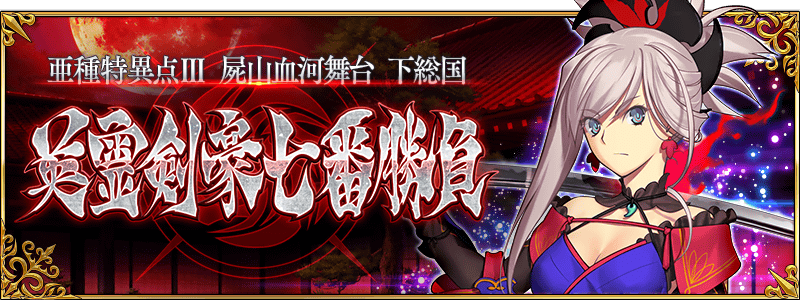
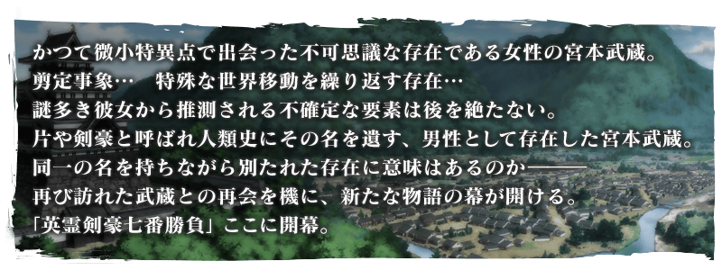
◆公開時間◆
2017年10月14日(六) 21:00～
◆亞種特異點Ⅲ開幕◆
「亞種特異點Ⅲ 屍山血河舞台 下總國 英靈劍豪七番勝負」的舞台為1639年 下總國。
以宮本武藏為中心，與各式各樣的Servant們展開緊張刺激的戰鬥。
◆開放條件◆
通過「終局特異點」後開放。
※不需要通過「亞種特異點Ⅰ 惡性隔絕魔境 新宿 新宿幻靈事件」及「亞種特異點Ⅱ 傳承地底世界 雅戈泰 雅戈泰之女」。
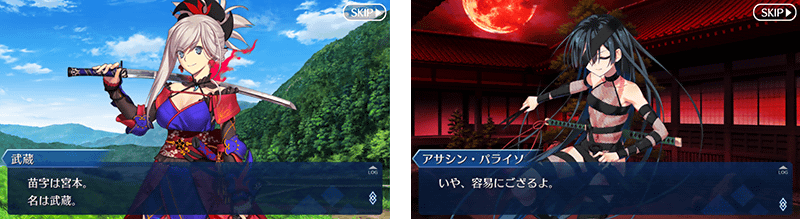
在Fate/Grand Order官方網站內首頁及Gallery，公開了亞種特異點Ⅲ的TVCM。
敬請確認。
※10/17 14:00更新
隨著亞種特異點Ⅲ的故事進行來真名判明的Servant以複數登場。
真名判明前的Servant，在靈基一覧畫面和編成畫面等各種畫面中會以隱藏真名狀態顯示。
另外，一部份Servant的寶具名也同様地，直到真名判明前會是隱藏正式名稱狀態。
還有，關於召喚時的演出和戰鬥時的語音等，在真名的判明前與判明後播放會有所差異。
各自的演出和語音，真名判明後可以在圖鑑(マテリアル)和Servant詳細畫面的語音清單中確認。
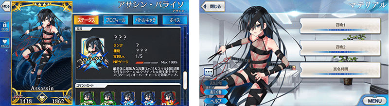
「亞種特異點Ⅲ 屍山血河舞台 下總國 英靈剣豪七番勝負」在戰鬥開始時會有切進特殊演出的情況。
將使用裝置的聲音設定為ON的話，能享受到更富有臨場感的演出。
請務必在遊玩「亞種特異點Ⅲ 屍山血河舞台 下總國 英靈剣豪七番勝負」的主線關卡時嘗試。
※還有，請注意關於特殊的開始演出不會於圖鑑(マテリアル)播放。
在亞種特異點Ⅲ的主線關卡，對Saber、Archer、Lancer職階的全Servant賦予在關卡中自身的絆點數獲得量提升效果。
將對象Servant編入隊伍，加深與Servant的絆吧！
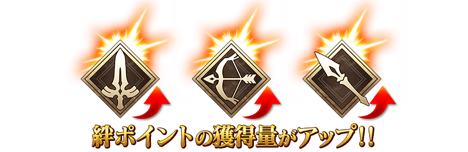
在亞種特異點Ⅲ會出現持有特殊HP量條的強力敵人。
這種敵人，必須減少複數次量條才能擊倒！
※透過一次的攻擊，超過HP量條的傷害不反映在下個HP量條。
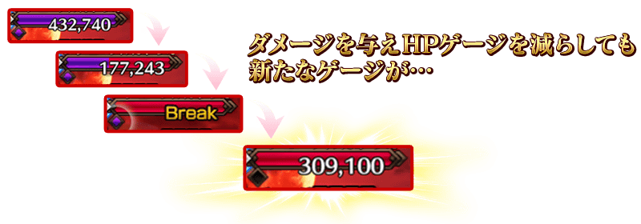
自亞種特異點Ⅲ，追加新道具1種類！
為新登場Servant的技能強化及靈基再臨必要的道具。
主要可以從亞種特異點Ⅲ主線關卡的敵人做為戰利品來獲得。
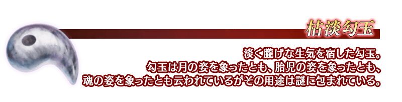
在亞種特異點Ⅲ的主線關卡存在付有編成限制的戰鬥。
在付有編成限制的戰鬥，做為支援登場的特定Guest Servant必須做為先發成員來編入。
請注意在該類關卡，支援的Guest Servant若配置成候補成員的話，無法開始關卡。

下述的期間中，在迦勒底之門內復刻宮本武藏體驗關卡！
※通過「特異點F 炎上汙染都市 冬木」後開放。
迎接｢★5(SSR)宮本武藏」做為支援成員，挑戰期間限定的關卡！
別錯過體驗Servant技能與寶具的機會！
◆宮本武藏體驗關卡舉辦期間◆
2017年10月8日(日) 12:00～10月13日(五) 22:59
◆關卡通過報酬◆
劍之秘石
劍之魔石
劍之輝石
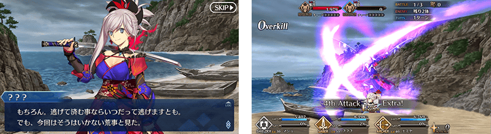
※宮本武藏體驗關卡與於2016年12月31日(六) 23:00～1月11日(三) 13:59的期間舉辦為相同內容的關卡。
請注意在上次實施時通過體驗關卡的話關卡不會出現。
※已通過宮本武藏體驗關卡的Master可從MyRoom的「マテリアル」重讀劇本。
在達文西工房的「稀有稜鏡交換」，追加宮本武藏的體驗關卡。
◆宮本武藏體驗關卡追加時間◆
2017年10月14日(六) 21:00～
◆追加道具◆
宮本武藏體驗關卡
※「2017年新年宣傳活動」限定體驗關卡開放
◆關卡通過報酬◆
劍之秘石
劍之魔石
劍之輝石
※請注意通過1次宮本武藏體驗關卡的話無法於達文西工房的「稀有稜鏡交換」交換。
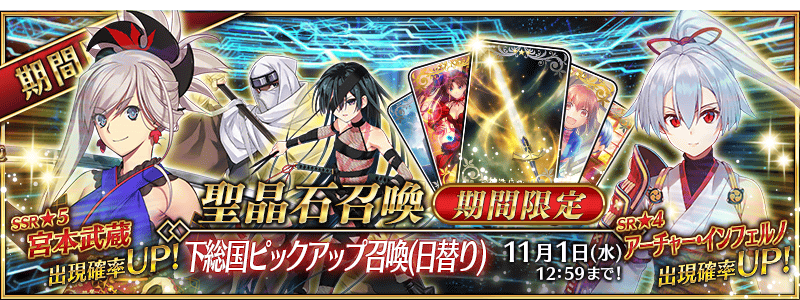
◆「下總國Pick Up召喚(每日交替)」期間◆
期間:2017年10月14日(六) 21:00～11月1日(三) 11:59
為了記念亞種特異點Ⅲ開幕，以期間限定舉辦「下總國Pick Up召喚(每日交替)」！
※未到達亞種特異點Ⅲ的狀態也能進行「下總國Pick Up召喚(每日交替)」。
於「亞種特異點Ⅲ 屍山血河舞台 下總國 英靈剣豪七番勝負」活躍的Servant「★5(SSR)宮本武藏」以期間限定登場！
以及「★4(SR)Archer・地獄」「★4(SR)Assassin・樂園」「★3(R)寶藏院胤舜」新登場！
從上述4位對象Servant「★4(SR)Archer・地獄」「★4(SR)Assassin・樂園」以每日交替Pick Up、「★5(SSR)宮本武藏」「★3(R)寶藏院胤舜」常駐Pick Up！
另外，新概念禮裝「★3(R)神造兵装」也先行新登場！
※宮本武藏在Pick Up期間結束後，不會追加到故事召喚。
Pick Up期間中，期間限定Servant、新登場Servant的出現機率提升！
詳情請在聖晶石召喚畫面左下的召喚詳細確認。
※新登場Servant及新登場概念禮裝會在Pick Up期間結束後追加到故事召喚。
※關於真名尚未判明的Servant，透過主線關卡的進行會讓Servant及一部份寶具的名稱變化。
10次召喚中確定1張★4(SR)以上和確定1位★3(R)以上的Servant！
※確定★4(SR)以上包含Servant和概念禮裝。
※所謂「出現機率提升」意指比同稀有度的Servant出現機率更高的設定。
| 每日交替Pick Up期間 |
每日交替Pick Up內容 |
10月14日(六) 22:00～
10月15日(日) 22:59 |
宮本武藏
Archer・地獄
Assassin・樂園
寶藏院胤舜 |
10月15日(日) 23:00～
10月17日(二) 22:59 |
宮本武藏
Archer・地獄
寶藏院胤舜 |
10月17日(二) 23:00～
10月20日(五) 22:59 |
宮本武藏
Assassin・樂園
寶藏院胤舜 |
10月20日(五) 23:00～
10月23日(一) 22:59
|
宮本武藏
Archer・地獄
Assassin・樂園
寶藏院胤舜 |
10月23日(一) 23:00～
10月26日(四) 22:59 |
宮本武藏
Archer・地獄
寶藏院胤舜 |
10月26日(四) 23:00～
10月28日(六) 22:59 |
宮本武藏
Assassin・樂園
寶藏院胤舜 |
10月28日(六) 23:00～
11月1日(三) 11:59 |
宮本武藏
Archer・地獄
Assassin・樂園
寶藏院胤舜 |
※請注意會以每日交替變更Pick Up的Servant。
介紹宮本武藏、Archer・地獄、Assassin・樂園、寶藏院胤舜的寶具演出！
在Fate/Grand Order官方網站內的公告中，公開了「★5(SSR)宮本武藏」「★4(SR)Archer・地獄」「★4(SR)Assassin・樂園」「★3(R)寶藏院胤舜」的寶具演出。敬請確認。
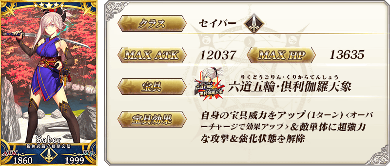
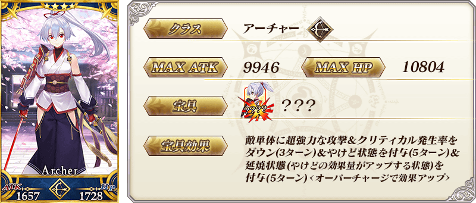
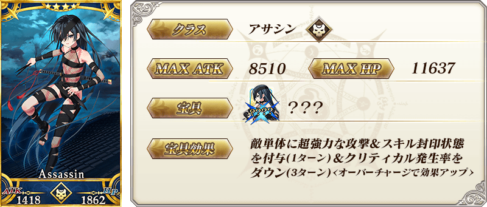
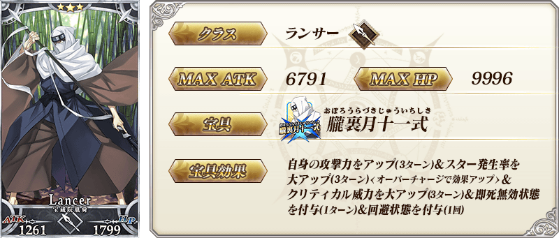
| 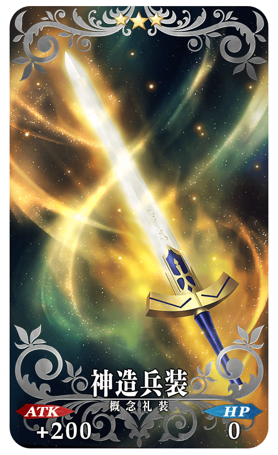 |
★★★R
神造兵装
ATK 200(最大:1000) HP 0
技能
〔Saber〕職階裝備的話寶具威力提升15% |
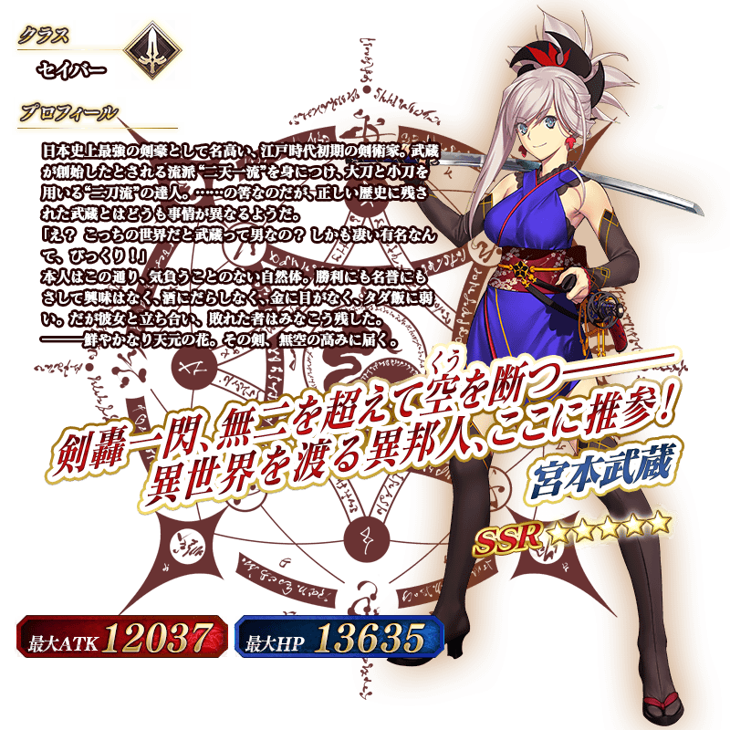
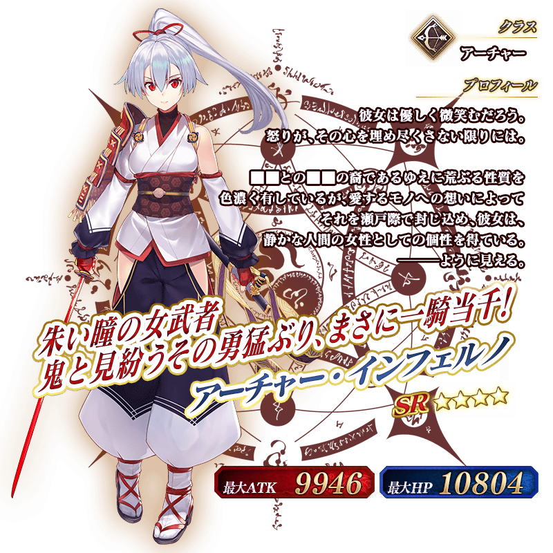

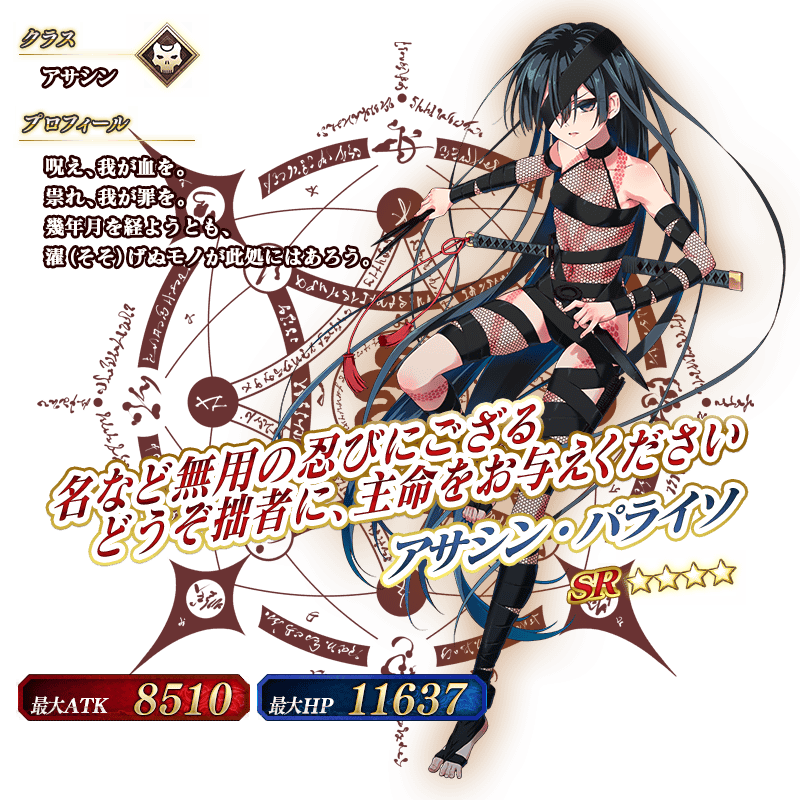